iOS Technology Usage Guidelines
iOS provides many great technologies that users appreciate, such as Passbook, multitasking, iCloud, Notification Center, and VoiceOver.
From the user’s perspective, these technologies are part of the iOS landscape, but developers know that it takes care and attention to make sure these features blend well with the user experience of their apps.
Routing
In iOS 6 and later, Maps displays a list of routing apps—including apps installed on the device and in the App Store—when people want transit information for a route.
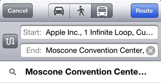
A routing app provides information about transit options for the currently selected route. People expect routing apps to be quick, easy to use, and—above all—accurate. Following the guidelines in this section helps you give users transit information they can trust and a user experience they appreciate.
Deliver the functionality your app promises. When people see your app in the transit list, they assume that it can help them reach their destination. But if your app can’t provide information about the selected route—or it doesn’t include the type of transit it appears to include—people are unlikely to give it a second chance. It’s essential to represent your app’s capabilities accurately; otherwise, your app can look like it’s intentionally misleading users.
There are two main ways you can give users confidence in your routing app:
Define the geographic regions you support as precisely as possible. For example, if your app helps people get information about bus routes in Paris, your supported region should be Paris, not Île-de-France, and not France.
Be specific about the types of transit that you support. For example, if you specialize in subway information, don’t imply that you provide information about all rail-based transit types.
Streamline the UI for ease of use. Ease of use is especially important for routing apps because people tend to use them under challenging conditions—such as in bright sunlight or in the dim interior of a train, on a bumpy ride, and when they’re in a hurry. Make sure that your text is easy to read in any light and that buttons are easy to tap accurately even when the ride is not smooth.
Focus on the route. Although auxiliary information can be useful, your app should focus on giving users step-by-step directions they can follow to their destination. In particular, you want users to know which step they’re in and how to get to the next step. You can provide additional data—such as timetables and system maps—but don’t make this data more prominent than the transit information.
Provide information for every step of a route. People should never feel abandoned by your app. But even when you accurately report your supported region, you can’t assume that users are already at the first transit stop in a route, or that the last transit stop is at the same location as their destination. To handle this situation, first examine the distances at the beginning and end of the route. If the distances are short enough, provide walking directions from the user’s current location to the first transit stop and from the last transit stop to the user’s final destination. If walking is not a reasonable choice, try to describe the user’s other options. If necessary, you can give users a way to open Maps to get walking or driving directions for these portions of the route.
When users transition to your app from Maps, don’t ask them to reenter information. If users are coming from Maps, you already know the start and end points of the route they’re interested in, so you can present the appropriate transit information as soon as your app opens. If users start your app from the Home screen, provide an easy way for them to enter route details.
Display transit information both graphically and textually. A map view helps people see their complete route in a larger, physical context; a list of steps helps people focus on the actions they must take to arrive at their destination. It’s best when you support both of these tasks and make it easy for users to switch between them.
When your app is chosen from the transit list, it works well to start by displaying the complete route—including walking paths to and from the transit stops, if appropriate—in a map view. A map view gives users an overview of the various steps in their journey and shows them how their route fits into the surrounding geographical area.
Enrich map views with additional information. People expect the maps in your app to behave similarly to other maps they’ve used. In addition to letting users zoom and pan, you should display annotations that give users the information they need. For example, you could display pins that represent the user’s current location, the destination, and transfers or points of interest along the way. Be sure to avoid displaying only a single pin, because it’s hard for users to tell what it represents if there’s no additional context. For more information about using map views in your app, see “Map View.”
As much as possible, integrate static maps—such as a subway system map—with a map view. A good way to do this is to overlay the static image on the map view so that users can see how their route and their current location relate to the larger transit system.
Give users different ways to sort multiple transit options. Lots of factors influence people’s transit decisions—such as time of day, weather, and how much they’re carrying—so it’s important to make it easy to compare transit options. For example, you could let users sort transit options by start or end time, amount of walking required, number of stops along the way, or number of transfers or different transit types required. Regardless of the order in which you display multiple transit options, make sure that users can instantly distinguish the differences between the options.
Consider using push notifications to give people important information about their route. As much as possible, let people know when transit information changes, so that they can adjust their plans. For example, if a train is delayed or a bus line is temporarily unavailable people might need to choose a different route to their destination. And in a route that includes long stops between steps, people might appreciate being notified when their transport is about to depart for the next part of the journey.
Passbook
The Passbook app helps people view and manage passes, which are digital representations of physical items such as boarding passes, coupons, membership cards, and tickets. In your app, you can create a pass, distribute it to users, and update it when things change.
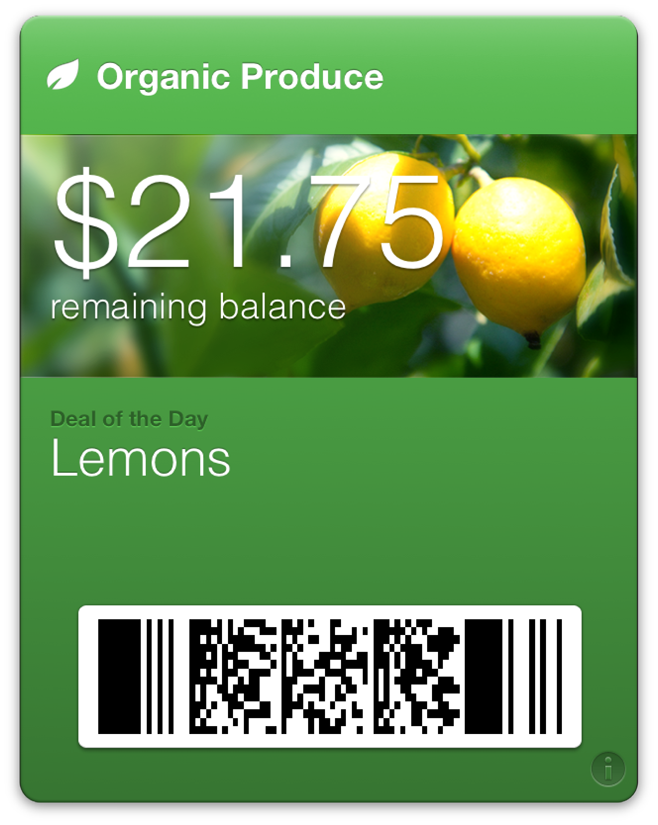
The Pass Kit framework makes it easy to use your custom content to assemble a pass and to access a pass when it’s in the user’s pass library. (To learn about the key concepts of Passbook technology and how to use the Pass Kit APIs in your app, see Passbook Programming Guide.) The following guidelines can help you create a pass that people appreciate having in their pass library and enjoy using.
As much as possible, avoid simply reproducing an existing physical pass. Passbook has an established design aesthetic and passes that coordinate with this aesthetic tend to look best. Instead of replicating the appearance of a physical item, take this opportunity to design a clean, simple pass that follows the form and function of Passbook.
Be selective about the information you put on the front of a pass. People expect to be able to glance at a pass and quickly get the information they need, so the front of a pass should be uncluttered and easy to read. If there’s additional information that you think people might need, it’s better to put it on the back of the pass than to squeeze it onto the front.
In general, avoid using a plain white background. A pass tends to look best when its background is a vivid, solid color or displays an image that uses strong, vibrant colors. As you design the background, always make sure that it doesn’t interfere with the readability of the content.
Use the logo text field for your company name. Text in the logo text field is rendered in a consistent font on all passes. To avoid clashing with other passes in the user’s pass library, it’s recommended that you enter text into the logo text field instead of using a custom font.
Use a white company logo. The logo image is placed in the upper-left corner of the pass, next to your company name. For best results, supply a white, monochrome version of your logo that doesn’t include text. If you want to engrave the logo so that it matches the rendered logo text, add a black drop shadow with a 1 pixel y offset, a 1 pixel blur, and 35% opacity.
Use a rectangular barcode when possible. Because of the layout of a pass, a rectangular barcode—such as PDF417—tends to look better than a square barcode. As shown below on the right, a square barcode creates empty gutters on both sides and can vertically crowd the fields above and below it.
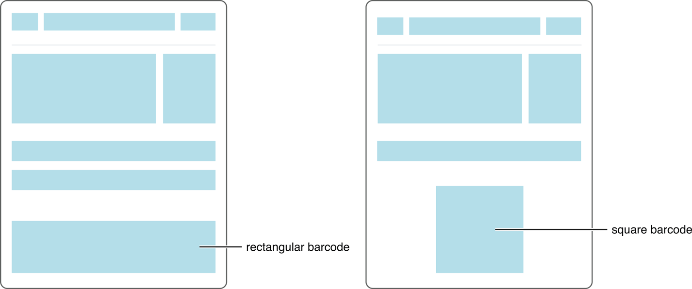
Optimize images for performance. Because users often receive passes via email or Safari, it’s important to make downloads as fast as possible. To improve the user experience, use the smallest image files that achieve the desired visual appearance.
Enhance the utility of a pass by updating it when appropriate. Even though a pass represents a physical item that doesn’t typically change, your digital pass can provide a better experience by reflecting real-world events. For example, you can update an airline boarding pass when a flight is delayed so that people always get current information when they check the pass.
Social Media
People expect to have access to their favorite social media accounts regardless of their current context. The following guidelines help you integrate social media interactions into your app in ways that people appreciate.
Give users a convenient way to compose a post without leaving your app. As much as possible, you want to integrate social media support into your app so users can post content to their account without switching to another app to do so. The Social framework provides a compose view controller that allows you to present users with a view in which they can edit a post. Optionally, you can prepopulate the compose view with custom content before you present it to users for editing (after you present the view to users, only they can edit the content). To learn about the programming interfaces of the Social framework—including the SLComposeViewController class—see Social Framework Reference.
When possible, avoid asking users to sign into a social media account. The Social framework works with the Accounts framework to support a single sign-on model, so you can get authorization to access the user’s account without asking them to reauthenticate. If the user hasn’t already signed into an account, you can present UI that allows them to do so.
Consider using an activity view controller to help users choose one of their social media accounts. By default, an activity view controller—that is, a UIActivityViewController object—lists several system-provided services that act upon the currently selected content, including sending the content via Mail or Messages and posting the content to social media accounts. When you use an activity view controller, you don’t have to provide a custom service that interacts with a social media account and you benefit from the user’s familiarity with the Share button that reveals the list of services. For guidelines on how to use an activity view controller in your app, see “Activity View Controller.”
iCloud
iCloud lets people access the content they care about regardless of which device they’re currently using. When you integrate iCloud into your app, users can use different instances of your app on different devices to view and edit their personal content without performing explicit synchronization. To provide this user experience, it’s likely that you’ll need to reexamine the ways in which you store, access, and present information—especially user-created content—in your app. To learn how to enable iCloud in your app, see iCloud Design Guide.
A fundamental aspect of the iCloud user experience is transparency: Ideally, users don’t need to know where their content is located and they should seldom have to think about which version of the content they’re currently viewing. The following guidelines can help you give users the iCloud experience they’re expecting.
If appropriate, make it easy for users to enable iCloud for your app. On their iOS devices, users log into their iCloud account in iCloud Settings, and for the most part, they expect their apps to work with iCloud automatically. But if you think users might want to choose whether to use iCloud with your app, you can provide a simple option that they can set when they open your app for the first time. In most cases, this option should provide a choice between using iCloud with all the content that users access in your app or not at all.
Respect the user’s iCloud space. It’s important to remember that iCloud is a finite resource for which users pay. You should use iCloud for storing information that users create and understand, and avoid using it to store app resources or content that you can regenerate. Also, note that when the user’s iCloud account is active, iCloud automatically backs up the contents of your app’s Documents folder. To avoid using up too much of the user’s space, it’s best to be picky about the content you place in the Documents folder.
Avoid asking users to choose which documents to store in iCloud. Typically, users expect all the content they care about to be available via iCloud. Most users don’t need to manage the storage of individual documents, so you shouldn’t assume that your app needs to support this experience. To provide a good user experience, you might want to rearchitect the way your app handles and exposes content so that you can perform more file-management tasks for the user.
Determine which types of information to store in iCloud. In addition to storing user-created documents and other content, you can also store small amounts of data such as the user’s current state in your app or their preferences. To store this type of information you use iCloud key-value storage. For example, if people use your app to read a magazine, you might use iCloud key-value storage to store the last page they viewed so that when they reopen the issue on a different device, they can continue reading from where they left off.
If you use iCloud key-value storage to store preferences, be sure that the preferences are ones that users are likely to want to have applied to all their devices. For example, some preferences are more useful in a work environment than they are in a home environment. In some cases, it can make sense to store preferences on your app’s server, instead of in the user’s iCloud account, so that the preferences are available regardless of whether iCloud is enabled.
Make sure that your app behaves reasonably when iCloud is unavailable. For example, if users log out of their iCloud account, turn off iCloud usage for your app, or enter Airplane mode, iCloud becomes unavailable. In these cases, users performed an action that turned off access to iCloud, so your app does not need to tell them about it. However, it can be appropriate to show users that the changes they make will not be visible on their other devices until they restore access to iCloud.
Avoid giving users the option to create a "local” document. Regardless of whether you support iCloud in your app, you should not encourage users to think in terms of a device-specific file system. Instead, you want users to focus on the pervasive availability of their content through iCloud.
When appropriate, update content automatically. It’s best when users don’t have to take any action to ensure that they’re accessing the most up-to-date content in your app. However, you need to balance this experience with respect for the user’s device space and bandwidth constraints. If your users work with very large documents, it can be appropriate to give them control over whether to download an update from iCloud. If you need to do this, design a way to indicate that a more recent version of the document is available in iCloud. When the user chooses to update the document, be sure to provide subtle feedback if the download takes more than a few seconds.
Warn users about the consequences of deleting a document. When a user deletes a document in an iCloud-enabled app, the document is removed from the user’s iCloud account and all other devices. It’s appropriate to display an alert that describes this result and to get confirmation before you perform the deletion.
Tell users about conflicts as soon as possible, but only when necessary. Using the iCloud programming interfaces, you should be able to resolve most conflicts between different versions of a document without involving the user. In cases where this is not possible, make sure that you detect conflicts as soon as possible so that you can help users avoid wasting time on the wrong version of their content. You need to design an unobtrusive way to show users that a conflict exists; then, make it easy for users to differentiate between versions and make a decision.
Be sure to include the user’s iCloud content in searches. Users with iCloud accounts tend to think of their content as being universally available, and they expect search results to reflect this perspective. If your app allows people to search their content, make sure you use the appropriate APIs to extend search to their iCloud accounts. (To learn how to search content in iCloud, see “Incorporating Search into Your Infrastructure” in iOS App Programming Guide.)
In-App Purchase
In-App Purchase lets people buy digital products within your app. For example, they might:
Upgrade a basic version of an app to a premium version
Renew a subscription for new monthly content
Purchase virtual items, such as a new level or weapon in a game
Buy and download new books
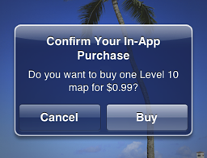
You use the Store Kit framework to embed a store in your app and support In-App Purchase. When a user makes a purchase, Store Kit connects to the App Store to securely process the payment and then notifies your app so that it can provide the purchased item.
The following guidelines can help you design a purchasing experience that users appreciate.
Elegantly integrate the store experience into your app. When presenting products and handling user transactions, create an experience that feels at home in your app. You don’t want users to think that they’ve entered a different app when they visit your store.
Use simple, succinct titles and descriptions. It’s best when people can scan a set of items and quickly find the ones they’re interested in. When you use plain, direct language and titles that don’t truncate or wrap, it’s easier for people to understand the items you’re offering.
Don’t alter the default confirmation alert. When users buy a product, Store Kit presents a confirmation alert (shown above). You shouldn’t modify this alert because it helps users avoid accidental purchases.
Game Center
Game Center lets people play games, organize online multiplayer games, and more. Players use the built-in Game Center app to sign in to an account, discover new games, add new friends, and browse leaderboards and achievements.
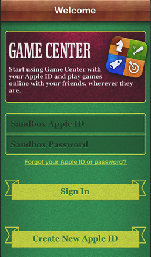
As a game developer, you use the Game Kit APIs to post scores and achievements to the Game Center service, display leaderboards in the game UI, and help users find other players. To learn how to integrate Game Center into your app, see Game Center Programming Guide.
The following guidelines can help you give people a great Game Center experience in your app.
Don’t create custom UI that prompts users to sign into Game Center. When people start your Game Center-enabled app—and they’re not already signed into Game Center on their device—the system automatically prompts them to sign in. Displaying custom sign-in UI is unnecessary and might confuse users.
In general, use the standard Game Center UI. In rare cases, it might make sense for a game to customize the Game Center UI, but doing so risks confusing people. The standard Game Center UI—which is familiar to both iOS and OS X users—promotes the sense of belonging to a larger gaming community.
Give users the ability to turn off voice chat. Some users might not want voice chat to be on automatically when they start your game, and most users appreciate the ability to turn off voice chat in certain situations.
Multitasking
Multitasking allows people to switch quickly among recently used apps. To support this experience, multitasking allows an app to enter a suspended state in the background when users switch away from it. When users switch back to the app, the app can resume quickly because it doesn’t have to reload its UI. People use the multitasking bar (shown here below the iPhone Calendar app) to choose a recently used app.
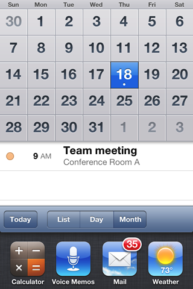
Thriving in a multitasking environment hinges on achieving a harmonious coexistence with other apps on the device. At a high level, this means that all apps should:
Handle interruptions or audio from other apps gracefully
Stop and restart—that is, transition to and from the background—quickly and smoothly
Behave responsibly when not in the foreground
The following specific guidelines help your app succeed in the multitasking environment.
Be prepared for interruptions, and be ready to resume. Multitasking increases the probability that a background app will interrupt your app. Other features, such as the presence of ads and faster app-switching, can also cause more frequent interruptions. The more quickly and precisely you can save the current state of your app, the faster people can relaunch it and continue from where they left off. To give users a seamless restart experience, take advantage of UIKit’s state preservation and restoration functionality (for more information, see “State Preservation and Restoration”).
Make sure your UI can handle the double-high status bar. The double-high status bar appears during events such as in-progress phone calls, audio recording, and tethering. In unprepared apps the extra height of this bar can cause layout problems. For example, the UI can become pushed down or covered. In a multitasking environment, it’s especially important to be able to handle the double-high status bar properly because there are likely to be more apps that can cause it to appear. You can trigger the double-high status bar during testing to help you find and correct any views that don’t handle it well. (To do this using iOS Simulator, choose Hardware > Toggle In-Call Status Bar.)
Be ready to pause activities that require people’s attention or active participation. For example, if your app is a game or a media-viewing app, make sure your users don’t miss any content or events when they switch away from your app. When people switch back to a game or media viewer, they want to continue the experience as if they’d never left it.
Ensure that your audio behaves appropriately. Multitasking makes it more likely that other media activity is occurring while your app is running. It also makes it more likely that your audio will have to pause and resume to handle interruptions. For specific guidelines that help you make sure your audio meets people’s expectations and coexists properly with other audio on the device, see “Sound.”
Use local notifications sparingly. An app can arrange for local notifications to be sent at specific times, whether the app is suspended, running in the background, or not running at all. For the best user experience, avoid pestering people with too many notifications, and follow the guidelines for creating notification content described in “Notification Center.”
When appropriate, finish user-initiated tasks in the background. When people initiate a task, they usually expect it to finish even if they switch away from your app. If your app is in the middle of performing a user-initiated task that does not require additional user interaction, you should complete it in the background before suspending.
Notification Center
Notification Center gives users a single, convenient place in which to view notifications from their apps. Users appreciate the unobtrusive interface of Notification Center and they value the ability to customize the way each app can present its notifications.
Notification Center uses a sectioned list to display recent notification items from the apps that users are interested in. In addition to notifications, users can also choose to see weather and stock market information in Notification Center.
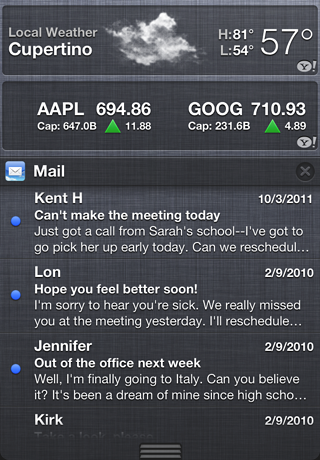
iOS apps can use local or push notifications to let people know when interesting things happen, such as:
A message has arrived
An event is about to occur
New data is available for download
The status of something has changed
A local notification is scheduled by an app and delivered by iOS on the same device, regardless of whether the app is currently running in the foreground. For example, a calendar or to-do app can schedule a local notification to alert people of an upcoming meeting or due date.
A push notification is sent by an app’s remote server to the Apple Push Notification service, which pushes the notification to all devices that have the app installed. For example, a game that a user can play against remote opponents can update all players with the latest move.
You can still receive local and push notifications when your app is running in the foreground, but you pass the information to your users in an app-specific way.
iOS apps that support local or push notifications can participate in Notification Center in various ways, depending on the user’s preferences. To ensure that users can customize their notification experience, you should support as many as possible of the following notification styles:
Banner
Alert
Badge
Sound
A banner is a small translucent view that appears onscreen and then disappears after a few seconds. In addition to your notification message, iOS displays the small version of your app icon in a banner, so that people can see at a glance which app is notifying them (to learn more about the small app icon, see “Small Icons”).
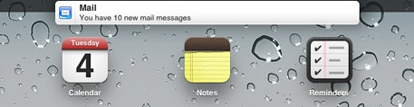
An alert is a standard alert view that appears onscreen and requires user interaction to dismiss. You supply the notification message and, optionally, a title for the action button in the alert. You have no control over the background appearance of the alert or the buttons.
A badge is a small red oval that displays the number of pending notification items (a badge appears over the upper-right corner of an app’s icon). You have no control over the size or color of the badge.
A custom or system-provided sound can accompany any of the other three notification delivery styles.
As you design the content that your notifications can deliver, be sure to observe the following guidelines.
Keep badge contents up to date. It’s especially important to update the badge as soon as users have attended to the new information, so that they don’t think additional notifications have arrived. Note that setting the badge contents to zero also removes the related notification items from Notification Center.
Don’t send multiple notifications for the same event. Users can attend to notification items when they choose; the items don’t disappear until users handle them in some way. If you send multiple notifications for the same event, you fill up the Notification Center list and users are likely to turn off notifications from your app.
Provide a custom message that does not include your app name. Your custom message is displayed in alerts and banners, and in Notification Center list items. You should not include your app’s name in your custom message because iOS automatically displays the name with your message.
To be useful, a local or push notification message should:
Focus on the information, not user actions. Avoid telling people which alert button to tap or how to open your app.
Be short enough to display on one or two lines. Long messages are difficult for users to read quickly, and they can force alerts to scroll.
Use sentence-style capitalization and appropriate ending punctuation. When possible, use a complete sentence.
Optionally, provide a custom title for the action button in an alert. An alert can contain one or two buttons. In a two-button alert, the Close button is on the left and the action button (titled View by default) is on the right. If you specify one button, the alert displays an OK button.
Tapping the action button dismisses the alert and launches your app simultaneously. Tapping either the Close button or the OK button dismisses the alert without opening your app.
If you want to use a custom title for the action button, be sure to create a title that clearly describes the action that occurs when your app launches. For example, a game might use the title Play to indicate that tapping the button opens the app to a place where the user can take their turn. Make sure the title:
Uses title-style capitalization
Is short enough to fit in the button without truncation (be sure to test the length of localized titles, too)
Provide a sound that users can choose to hear when a notification arrives. A sound can get people’s attention when they’re not looking at the device screen. Users might want to enable sounds when they’re expecting a notification that they consider important. For example, a calendar app might play a sound with an alert that reminds people about an imminent event. Or, a collaborative task management app might play a sound with a badge update to signal that a remote colleague has completed an assignment.
You can supply a custom sound, or you can use a built-in alert sound. If you create a custom sound, be sure it’s short, distinctive, and professionally produced. (To learn about the technical requirements for this sound, see “Preparing Custom Alert Sounds” in Local and Push Notification Programming Guide.) Note that you can’t programmatically cause the device to vibrate when a notification is delivered, because the user has control over whether alerts are accompanied by vibration.
Optionally, provide a launch image. In addition to displaying your existing launch images, you can supply a different launch image to display when people start your app in response to a notification. For example, a game might specify a launch image that’s similar to a screen within the game, instead of an image that’s similar to the opening menu screen. If you don’t supply this launch image, iOS displays either the previous snapshot or one of your other launch images. (To learn how to create a launch image, see “Launch Images.”)
Printing
In iOS 4.2 and later, and on devices that support multitasking, users can wirelessly print content from your app. You can take advantage of built-in support for printing images and PDF content, or you can use printing-specific programming interfaces to do custom formatting and rendering. iOS handles printer discovery and the scheduling and execution of print jobs on the selected printer.
Typically, users tap the standard Share button in your app when they want to print something. When they choose the Print item in the view that appears, they can then select a printer, set available printing options, and tap the Print button to start the job. On iPhone, this view appears in an action sheet that slides up from the bottom of the screen; on iPad, the view appears in a popover that emerges from the button.
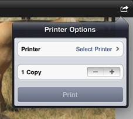
Users can check on the print job they requested in the Print Center app, which is a background system app that is available only while a print job is in progress. In Print Center, users can view the current print queue, get details about a specific print job, and even cancel the job.
You can support basic printing in your app with comparatively little additional code (to learn about adding print support to your code, see Drawing and Printing Guide for iOS). To ensure that users appreciate the printing experience in your app, follow these guidelines:
Use the system-provided Share button. Users are familiar with the meaning and behavior of this button, so it’s a good idea to use it when possible. The main exception to this is if your app does not contain a toolbar or navigation bar. When this is the case, you need to design a custom print button that can appear in the main UI of your app, because the Share button can only be used in a toolbar or navigation bar.
Display the Print item when printing is a primary function in the current context. If printing is inappropriate in the current context, or if users are not likely to want to print, don’t include the Print item in the view revealed by the Share button.
If appropriate, provide additional printing options to users. For example, you might allow users to choose a page range or to request multiple copies.
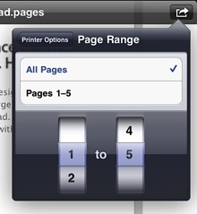
Don’t display print-specific UI if users can’t print. Be sure to check whether the user’s device supports printing before you display UI that offers printing as an option. To learn how to do this in your code, see UIPrintInteractionController Class Reference.
iAd Rich Media Ads
In iOS 4.0 and later, you can allow advertisements to display within your app and you can receive revenue when users see or interact with them. It’s essential that you plan when and how to integrate ads with your UI so that people are motivated to view them without being distracted from your app.
You host an ad served by the iAd Network in a specific view in your UI. Initially, this view contains the ad’s banner, which functions as the entrance into the full iAd experience. When people tap the banner, the ad performs a preprogrammed action, such as playing a movie, displaying interactive content, or launching Safari to open a webpage. The action can display content that covers your UI or it might cause your app to transition to the background.
There are three types of banners that you can display in your app: standard, medium rectangle, and full screen. All types of banners serve the same purpose—that is, to usher users into the ad—but they differ in their appearance and functionality.
A standard banner takes up a small area of the screen and is often visible for as long as the screen is visible. You choose the app screens that should display a standard banner and make room for the banner view in the layout.
All iOS apps running in iOS 4.0 and later can display standard banners. You use a view provided by the ADBannerView class to contain a standard banner in your app.
A medium rectangle banner is similar in behavior to a standard banner and—as with standard banners—you choose where a medium rectangle banner should be displayed. Medium rectangle banners are available only in iPad apps running in iOS 6.0 and later. You use a view provided by the ADBannerView class to contain a medium rectangle banner in your app.
A full screen banner occupies most or all of the screen and is usually visible at specific times during the app flow or in specific locations. You choose whether to display the banner modally or as a separate page within scrollable content.
Full screen banners are available only in iPad apps running in iOS 4.3 and later. You use a view provided by the ADInterstitialAd class to contain a full screen banner in your app.
All banner types appear inside the iAd frame, which displays the iAd mark in the lower-right corner. The iAd frame has been designed to look best when it is anchored to the bottom edge of your app screens.
The dimensions of the standard banner view you place in the app UI vary, according to the device and the orientation.
Device | Portrait | Landscape |
|---|---|---|
iPad | 768 x 66 points | 1024 x 66 points |
iPhone | 320 x 50 points | 480 x 32 points |
The dimensions of a medium rectangle banner view don’t vary with changes in device orientation.
iPad orientation | Width | Height |
|---|---|---|
Portrait and landscape | 300 points | 250 points |
The overall dimensions of a full screen banner view can vary with changes in device orientation, but the height can vary further with the presence or absence of iOS bars (such as toolbars and tab bars) in your app’s UI. The width of a full screen banner is always the full width of the iPad screen.
iPad orientation | Width | Height range |
|---|---|---|
Portrait | 768 points | 911 points to 1024 points |
Landscape | 1024 points | 655 points to 768 points |
To ensure seamless integration with banner ads and to provide the best user experience, follow these guidelines:
Place a standard banner view at or near the bottom of the screen. This placement differs slightly, depending on whether there is a bar on the bottom of the screen and if so, the kind of bar.
If there are no bars at the bottom of the screen, put the standard banner view at the bottom edge of the screen (iPod touch shown).
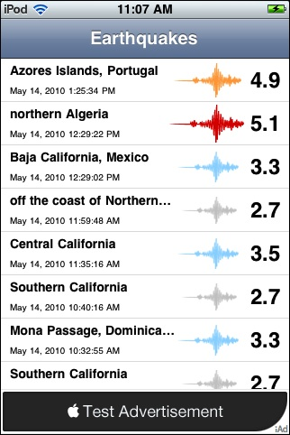
If there are no bars at all, again put the standard banner view at the bottom edge of the screen (iPod touch shown).
If there is a toolbar or tab bar, put the standard banner view directly above the toolbar or tab bar (iPod touch shown).
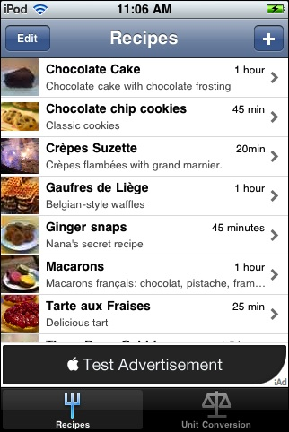
Place a medium rectangle banner view where it doesn’t interfere with the user’s content. As with the standard banner view, the medium banner view looks best at or near the bottom of the screen. Putting the banner near the bottom of the screen also increases the likelihood that it won’t get in people’s way.
Present a full screen banner modally when there are interludes in the user experience. If there are natural breaks or context changes in the flow of your iPad app, the modal presentation style can be appropriate. When you present a full screen banner modally (by using presentFromViewController:), the user must either enter the ad or dismiss it. For this reason, it’s a good idea to use the modal presentation style when users are expecting a change in experience, such as after they complete a task.
Be sure to reveal and close a modal full screen banner view in a way that makes sense in your app. For example, a game might use fade-in and fade-out animations to reveal and close the banner.
As you can see below, a modally presented full screen banner completely covers the app UI and includes the iAd close button in the upper-left corner.
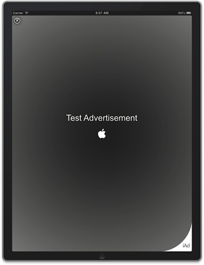
Present a full screen banner nonmodally when there are transitions between app views. If users experience your app by making frequent screen transitions, such as paging through a magazine or flicking through a gallery, the nonmodal presentation style can be appropriate. When you present a full screen banner nonmodally (by using presentInView:), you can preserve the bars in your UI so that users can use app controls to move past or return to the ad. As with all banners, a full screen banner launches the iAd experience when a user taps it, but your app can respond to other gestures within the banner area (such as drag or swipe) if appropriate.
Be sure to use appropriate animations to reveal and hide a nonmodal full screen banner view. For example, a magazine reader app would probably present a banner using the same page-turn animation it uses to reveal other content pages.
The nonmodally presented full screen banner shown below is displayed between a navigation bar and a toolbar. However, it’s up to you to choose which bars should be present.
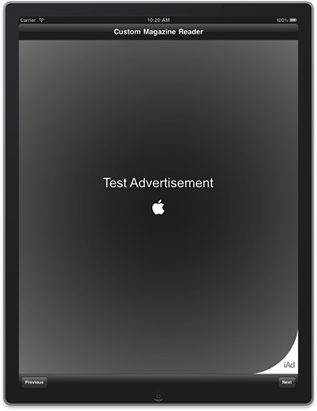
Ensure that all banners appear when and where it makes sense in your app. People are more likely to enter the iAd experience when they don’t feel like they’re interrupting their workflow to do so. This is especially important for immersive apps such as games: You don’t want to place banner views where they will conflict with playing a game.
Avoid displaying banners on screens that users are likely to see only briefly. If your app includes screens that users move through quickly as they drill down or navigate to the content they care about, it’s best to avoid displaying banners on these screens. Users are more likely to tap a banner when it stays onscreen for more than a second or two.
As much as possible, display banner ads in both orientations. It’s best when users don’t have to change the orientation of the device to switch between using your app and viewing an ad. Also, supporting both orientations allows you to accept a wider range of advertisements. To learn how to make sure a banner view responds to orientation changes, see iAd Programming Guide.
Don’t allow standard or medium rectangle banners to scroll off the screen. If your app displays scrolling content in the screen, make sure the banner view remains anchored in its position.
While people view or interact with ads, pause activities that require their attention or interaction. When people choose to view an ad, they don’t want to feel that they’re missing events in your app, and they don’t want your app to interrupt the ad experience. A good rule of thumb is to pause the same activities you would pause when your app transitions to the background.
Don’t stop an ad, except in rare circumstances. In general, your app continues running and receiving events while users view and interact with ads, so it’s possible that an event will occur that urgently requires their immediate attention. However, there are very few scenarios that warrant the dismissal of an in-progress ad. One possibility is with an app that provides Voice over Internet Protocol (VoIP) service. In such an app, it probably makes sense to cancel a running ad when an incoming call arrives.
Location Services and Data Privacy
Location Services allows apps to determine people’s approximate location geographically, the direction they’re pointing their device, and the direction in which they’re moving. In iOS 6.0 and later, other system services—such as Contacts, Calendar, Reminders, and Photo Library—also allow apps to access the data people store in them.
Although people appreciate the convenience of using an app that already knows a lot about them, they also expect to have the option of keeping their data private. For example, people like being able to automatically tag content with their physical location or find friends that are currently nearby, but they also want to be able to disable such features when they don’t choose to share their location with others. (To learn more about how to make your app location-aware, see Location Awareness Programming Guide.)
In iOS 6.0 and later, the system displays an alert that asks users if they want to permit an app to access their personal data. For example, when Location Services is on and a user opens Compass for the first time, the following alert appears:
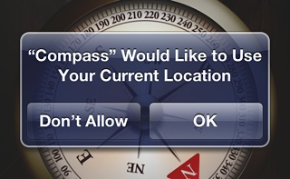
The following guidelines can help you ask for user data in ways that help people feel comfortable.
Make sure users understand why they’re being asked to share their personal data. It’s natural for people to be suspicious of a request for their personal information if they don’t see an obvious need for it. To avoid making users uncomfortable, make sure the alert appears only when they attempt to use a feature that clearly needs to know their information. For example, people can use Maps when Location Services is off, but they see an alert when they access the feature that finds and tracks their current location.
Describe why your app needs the information, if it’s not obvious. You can provide text that appears in the alert, below a system-provided title such as ““App Name” Would Like to Access Your Contacts”. You want this text to be specific and polite so that people understand why you’re asking for access to their information and don’t feel pressured. Your reason text should:
Not include your app name. The system-provided alert title already includes your app name.
Clearly describe why your app needs the data. If appropriate, you might also explain ways in which your app will not use the data.
Use user-centric terminology and be localizable.
Be as short as possible, while still being easy to understand. As much as possible, avoid supplying more than one sentence.
Use sentence-style capitalization. (Sentence-style capitalization means that the first word is capitalized, and the rest of the words are lowercase unless they are proper nouns or proper adjectives.)
Ask permission at app startup only if your app can’t perform its primary function without the user’s data. People will not be bothered by this if it’s obvious that the main function of your app depends on knowing their personal information.
Avoid making programmatic calls that trigger the alert before the user actually selects the feature that needs the data. This way, you avoid causing people to wonder why your app wants their personal information when they’re doing something that doesn’t appear to need it. (Note that getting the user’s Location Services preference does not trigger the alert.)
For location data, check the Location Services preference to avoid triggering the alert unnecessarily. You can use Core Location programming interfaces to get this setting (to learn how to do this, see Core Location Framework Reference). With this knowledge, you can trigger the alert as closely as possible to the feature that requires location information, or perhaps avoid an alert altogether.
Quick Look Document Preview
In iOS 4 and later, users can preview a document within your app, even if your app cannot open the document. For example, you might allow users to preview documents that they download from the web or receive from other sources. To learn more about how to support Quick Look document preview in your app, see Document Interaction Programming Topics for iOS.
Before users preview a document in your app, they can see information about the document in a custom view that you create. For example, after users download a document attached to an email message, Mail on iPad displays the document’s icon, title, and size in a custom view within the message. Users can tap this view to preview the document.
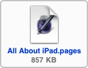
You can present a document preview in a new view in your app, or in a full-screen, modal view. The presentation method you choose depends on which device your app runs on.
On iPad, display a document preview modally. The large iPad screen is appropriate for displaying a document preview in an immersive environment that users can easily leave. The zoom transition is especially well-suited to reveal the preview.
On iPhone, display a document preview in a dedicated view, preferably a navigation view. Doing this allows users to navigate to and from the document preview without losing context in your app. Although it’s possible to display a document preview modally in an iPhone app, it’s not recommended. (Note that the zoom transition is not available on iPhone.)
Also, note that displaying a document preview in a navigation view allows Quick Look to place preview-specific navigation controls in the navigation bar. (If your view already contains a toolbar, Quick Look places the preview navigation controls in the toolbar, instead.)
Sound
iOS devices produce great sound that users appreciate. In your app, sound might be an essential part of the user experience or provide only incidental enhancement. Regardless of the role that sound plays in your app, you need to know how users expect sound to behave and how to meet those expectations.
Understand User Expectations
People can use device controls to affect sound, and they might use wired or wireless headsets and headphones. People also have various expectations for how their actions impact the sound they hear. Although you might find some of these expectations surprising, they all follow the principle of user control in that the user, not the device, decides when it’s appropriate to hear sound.
Users switch their devices to silent when they want to:
Avoid being interrupted by unexpected sounds, such as phone ringtones and incoming message sounds
Avoid hearing sounds that are the byproducts of user actions, such as keyboard or other feedback sounds, incidental sounds, or app startup sounds
Avoid hearing game sounds that are not essential to using the game, such as incidental sounds and soundtracks
For example, in a theater users switch their devices to silent to avoid bothering other people in the theater. In this situation, users still want to be able to use apps on their devices, but they don’t want to be surprised by sounds they don’t expect or explicitly request, such as ringtones or new message sounds.
The Ring/Silent (or Silent) switch does not silence sounds that result from user actions that are solely and explicitly intended to produce sound. For example:
Media playback in a media-only app is not silenced because the media playback was explicitly requested by the user.
A Clock alarm is not silenced because the alarm was explicitly set by the user.
A sound clip in a language-learning app is not silenced because the user took explicit action to hear it.
Conversation in an audio chat app is not silenced because the user started the app for the sole purpose of having an audio chat.
Users use the device’s volume buttons to adjust the volume of all sounds their devices can play, including songs, app sounds, and device sounds. Users can use the volume buttons to quiet any sound, regardless of the position of the Ring/Silent (or Silent) switch. Using the volume buttons to adjust an app’s currently playing audio also adjusts the overall system volume, with the exception of the ringer volume.
Users use headsets and headphones to hear sounds privately and to free their hands. Regardless of whether these accessories are wired or wireless, users have specific expectations for the user experience.
When users plug in a headset or headphones, or connect to a wireless audio device, they intend to continue listening to the current audio, but privately. For this reason, they expect an app that is currently playing audio to continue playing without pause.
When users unplug a headset or headphones, or disconnect from a wireless device (or the device goes out of range or turns off), they don’t want to automatically share what they’ve been listening to with others. For this reason, they expect an app that is currently playing audio to pause, allowing them to explicitly restart playback when they’re ready.
Define the Audio Behavior of Your App
If necessary, you can adjust relative, independent volume levels to produce the best mix in your app’s audio output. But the volume of the final audio output should always be governed by the system volume, whether it’s adjusted by the volume buttons or a volume slider. This means that control over an app’s audio output remains in users’ hands, where it belongs.
Ensure that your app can display the audio route picker, if appropriate. (An audio route is an electronic pathway for audio signals, such as from a device to headphone or from a device to speakers.) Even though people don’t physically plug in or unplug a wireless audio device, they still expect to be able to choose a different audio route. To handle this, iOS automatically displays a control that allows users to pick an output audio route (use the MPVolumeView class to allow the control to display in your app). Because choosing a different audio route is a user-initiated action, users expect currently playing audio to continue without pause.
If you need to display a volume slider, be sure to use the system-provided volume slider available when you use the MPVolumeView class. Note that when the currently active audio output device does not support volume control, the volume slider is replaced by the appropriate device name.
If your app produces only UI sound effects that are incidental to its functionality, use System Sound Services. System Sound Services is the iOS technology that produces alerts and UI sounds and invokes vibration; it is unsuitable for any other purpose. When you use System Sound Services to produce sound, you cannot influence how your audio interacts with audio on the device, or how it should respond to interruptions and changes in device configuration. For a sample project that demonstrates how to use this technology, see Audio UI Sounds (SysSound).
If sound plays an important role in your app, use Audio Session Services or the AVAudioSession class. These programming interfaces do not produce sound; instead, they help you express how your audio should interact with audio on the device and respond to interruptions and changes in device configuration.
In Audio Session Services, the audio session functions as an intermediary for audio between your app and the system. One of the most important facets of the audio session is the category, which defines the audio behavior of your app.
To realize the benefits of Audio Session Services and provide the audio experience users expect, you need to select the category that best describes the audio behavior of your app. This is the case whether your app plays only audio in the foreground or can also play audio in the background. Follow these guidelines as you make this selection:
Select an audio session category based on its semantic meaning, not its precise set of behaviors. By selecting a category whose purpose is clear, you ensure that your app behaves according to users’ expectations. In addition, it gives your app the best chance of working properly if the exact set of behaviors is refined in the future.
In rare cases, add a property to the audio session to modify a category’s standard behavior. A category’s standard behavior represents what most users expect, so you should consider carefully before you change that behavior. For example, you might add the ducking property to make sure your audio is louder than all other audio (except phone audio), if that’s what users expect from your app. (To learn more about audio session properties, see “Fine-Tuning the Category” in Audio Session Programming Guide.)
Consider basing your category selection on the current audio environment of the device. This might make sense if, for example, users can use your app while listening to other audio instead of to your soundtrack. If you do this, be sure to avoid forcing users to stop listening to their music or make an explicit soundtrack choice when your app starts.
In general, avoid changing categories while your app is running. The primary reason for changing the category is if your app needs to support recording and playback at different times. In this case, it can be better to switch between the Record category and the Playback category as needed, than to select the Play and Record category. This is because selecting the Record category ensures that no alerts—such as an incoming text message alert—will sound while the recording is in progress.
Table 6-4 lists the audio session categories you can use. Different categories allow sounds to be silenced by the Ring/Silent or Silent switch (or device locking), to mix with other audio, or to play while the app is in the background. (For the actual category and property names as they appear in the programming interfaces, see Audio Session Programming Guide.)
Category | Meaning | Silenced | Mixes | In Background |
|---|---|---|---|---|
Solo Ambient | Sounds enhance app functionality, and should silence other audio. | Yes | No | No |
Ambient | Sounds enhance app functionality but should not silence other audio. | Yes | Yes | No |
Playback | Sounds are essential to app functionality and might mix with other audio. | No | No (default) Yes (when the Mix With Others property is added) | Yes |
Record | Audio is user-recorded. | No | No | Yes |
Play and Record | Sounds represent audio input and output, sequentially or simultaneously. | No | No (default) Yes (when the Mix With Others property is added) | Yes |
Audio Processing | App performs hardware-assisted audio encoding (it does not play or record). | N/A | No | Yes * |
* If you select the Audio Processing category and you want to perform audio processing in the background, you need to prevent your app from suspending before you’re finished with the audio processing. To learn how to do this, see “Implementing Long-Running Background Tasks” in iOS App Programming Guide.
Here are some scenarios that illustrate how to choose the audio session category that provides an audio experience users appreciate.
Scenario 1: An educational app that helps people learn a new language. You provide:
Feedback sounds that play when users tap specific controls
Recordings of words and phrases that play when users want to hear examples of correct pronunciation
In this app, sound is essential to the primary functionality. People use this app to hear words and phrases in the language they’re learning, so the sound should play even when the device locks or is switched to silent. Because users need to hear the sounds clearly, they expect other audio they might be playing to be silenced.
To produce the audio experience users expect for this app, you’d use the Playback category. Although this category can be refined to allow mixing with other audio, this app should use the default behavior to ensure that other audio does not compete with the educational content the user has explicitly chosen to hear.
Scenario 2: A Voice over Internet Protocol (VoIP) app. You provide:
The ability to accept audio input
The ability to play audio
In this app, sound is essential to the primary functionality. People use this app to communicate with others, often while they’re currently using a different app. Users expect to be able to receive calls when they’ve switched their device to silent or the device is locked, and they expect other audio to be silent for the duration of a call. They also expect to be able to continue calls when the app is in the background.
To produce the expected user experience for this app, you’d use the Play and Record category, and you’d be sure to activate your audio session only when you need it so that users can use other audio between calls.
Scenario 3: A game that allows users to guide a character through different tasks. You provide:
Various gameplay sound effects
A musical soundtrack
In this app, sound greatly enhances the user experience, but isn’t essential to the main task. Also, users are likely to appreciate being able to play the game silently or while listening to songs in their music library instead of to the game soundtrack.
The best strategy is to find out if users are listening to other audio when your app starts. Don’t ask users to choose whether they want to listen to other audio or listen to your soundtrack. Instead, use the Audio Session Services function AudioSessionGetProperty to query the state of the kAudioSessionProperty_OtherAudioIsPlaying property. Based on the answer to this query, you can choose either the Ambient or Solo Ambient categories (both categories allow users to play the game silently):
If users are listening to other audio, you should assume that they’d like to continue listening and wouldn’t appreciate being forced to listen to the game soundtrack instead. In this situation, you’d choose the Ambient category.
If users aren’t listening to any other audio when your app starts, you’d choose the Solo Ambient category.
Scenario 4: An app that provides precise, real-time navigation instructions to the user’s destination. You provide:
Spoken directions for every step of the journey
A few feedback sounds
The ability for users to continue to listen to their own audio
In this app, the spoken navigation instructions represent the primary task, regardless of whether the app is in the background. For this reason, you’d use the Playback category, which allows your audio to play when the device is locked or switched to silent, and while the app is in the background.
To allow people to listen to other audio while they use your app, you can add the kAudioSessionProperty_OverrideCategoryMixWithOthers property. However, you also want to make sure that users can hear the spoken instructions above the audio they’re currently playing. To do this, you can apply the kAudioSessionProperty_OtherMixableAudioShouldDuck property to the audio session to ensures that your audio is louder than all currently playing audio, with the exception of phone audio on iPhone. These settings allow the app to reactivate its audio session while the app is in the background, which ensures that users get navigation updates in real time.
Scenario 5: A blogging app that allows users to upload their text and graphics to a website. You provide:
A short startup sound file
Various short sound effects that accompany user actions (such as a sound that plays when a post has been uploaded)
An alert sound that plays when a posting fails
In this app, sound enhances the user experience, but it's not essential. The main task has nothing to do with audio and users don’t need to hear any sounds to successfully use the app. In this scenario, you’d use System Sound Services to produce sound. This is because the audio context of all sound in the app conforms to the intended purpose of this technology, which is to produce UI sound effects and alert sounds that obey device locking and the Ring/Silent (or Silent) switch in the way that users expect.
Manage Audio Interruptions
Sometimes, currently playing audio is interrupted by audio from a different app. On iPhone, for example, an incoming phone call interrupts the current app’s audio for the duration of the call. In a multitasking environment, the frequency of such audio interruptions can be high.
To provide an audio experience users appreciate, iOS relies on you to:
Identify the type of audio interruption your app can cause
Respond appropriately when your app continues after an audio interruption ends
Every app needs to identify the type of audio interruption it can cause, but not every app needs to determine how to respond to the end of an audio interruption. This is because most types of apps should respond to the end of an audio interruption by resuming audio. Only apps that are primarily or partly media playback apps—and that provide media playback controls—have to take an extra step to determine the appropriate response.
Conceptually, there are two types of audio interruptions, based on the type of audio that’s doing the interrupting and the way users expect the particular app to respond when the interruption ends:
A resumable interruption is caused by audio that users view as a temporary interlude in their primary listening experience.
After a resumable interruption ends, an app that displays controls for media playback should resume what it was doing when the interruption occurred, whether this is playing audio or remaining paused. An app that doesn’t have media playback controls should resume playing audio.
For example, consider a user listening to an app for music playback on iPhone when a VoIP call arrives in the middle of a song. The user answers the call, expecting the playback app to be silent while they talk. After the call ends, the user expects the playback app to automatically resume playing the song, because the music—not the call—constitutes their primary listening experience and they had not paused the music before the call arrived. On the other hand, if the user had paused music playback before the call arrived, they would expect the music to remain paused after the call ends.
Other examples of apps that can cause resumable interruptions are apps that play alarms, audio prompts (such as spoken driving directions), or other intermittent audio.
A nonresumable interruption is caused by audio that users view as a primary listening experience, such as audio from a media playback app.
After a nonresumable interruption ends, an app that displays media playback controls should not resume playing audio. An app that doesn’t have media playback controls should resume playing audio.
For example, consider a user listening to a music playback app (music app 1) when a different music playback app (music app 2) interrupts. In response, the user decides to listen to music app 2 for some period of time. After quitting music app 2, the user wouldn’t expect music app 1 to automatically resume playing because they’d deliberately made music app 2 their primary listening experience.
The following guidelines help you decide what information to supply and how to continue after an audio interruption ends.
Identify the type of audio interruption your app caused. You do this by deactivating your audio session in one of the following two ways when your audio is finished:
If your app caused a resumable interruption, deactivate your audio session with the
AVAudioSessionSetActiveFlags_NotifyOthersOnDeactivationflag.If your app caused a nonresumable interruption, deactivate your audio session without any flags.
Providing, or not providing, the flags allows iOS to give interrupted apps the ability to resume playing their audio automatically, if appropriate.
Determine whether you should resume audio when an audio interruption ends. You base this decision on the audio user experience you provide in your app.
If your app displays media playback controls that people use to play or pause audio, you need to check the
AVAudioSessionInterruptionFlags_ShouldResumeflag when an audio interruption ends.If your app receives the Should Resume flag, your app should:
Resume playing audio if your app was actively playing audio when it was interrupted
Not resume playing audio if your app was not actively playing audio when it was interrupted
If your app doesn’t display any media playback controls that people can use to play or pause audio, your app should always resume previously playing audio when an audio interruption ends, regardless of whether the Should Resume flag is present.
For example, a game that plays a soundtrack should automatically resume playing the soundtrack after an interruption.
Handle Media Remote Control Events, if Appropriate
Beginning in iOS 4.0, apps can receive remote control events when people use iOS media controls or accessory controls, such as headset controls. This allows your app to accept user input that doesn’t come through your UI, whether your app is currently playing audio in the foreground or in the background.
In iOS 4.3 and later, apps can send video to AirPlay-enabled hardware—such as Apple TV—and transition to the background while playback continues. Such an app can accept user input via remote control events, so that users can control video playback while the app is in the background. In addition, this type of app can also reactivate an audio session after an interruption while it’s in the background.
A media playback app, in particular, needs to respond appropriately to media remote control events, especially if it plays audio or video while it’s in the background.
To meet the responsibilities associated with the privilege of playing media while your app is in the background, be sure to follow these guidelines:
Limit your app’s eligibility to receive remote control events to times when it makes sense. For example, if your app helps users read content, search for information, and listen to audio, it should accept remote control events only while the user is in the audio context. When the user leaves the audio context, you should relinquish the ability to receive the events. If your app lets users play audio or video on an AirPlay-enabled device, it should accept remote control events for the duration of media playback. Following these guidelines allows users to consume a different app’s media—and control it with headset controls—when they’re in the nonmedia contexts of your app.
As much as possible, use system-provided controls to offer AirPlay support. When you use the MPMoviePlayerController class to enable AirPlay playback, you can take advantage of a standard control that allows users to choose an AirPlay-enabled device that is currently in range. Or you can use the MPVolumeView class to display AirPlay-enabled audio or video devices from which users can choose. Users are accustomed to the appearance and behavior of these standard controls, so they’ll know how to use them in your app.
Don’t repurpose an event, even if the event has no meaning in your app. Users expect the iOS media controls and accessory controls to function consistently in all apps. You do not have to handle the events that your app doesn’t need, but the events that you do handle must result in the experience users expect. If you redefine the meaning of an event, you confuse users and risk leading them into an unknown state from which they can’t escape without quitting your app.
VoiceOver and Accessibility
VoiceOver is designed to increase accessibility for blind and low-vision users, and for users with certain learning challenges.
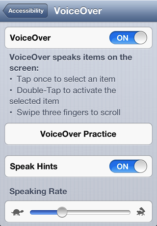
To make sure VoiceOver users can use your app, you might need to supply some descriptive information about the views and controls in your user interface. Supporting VoiceOver does not require you to change the visual design of your UI in any way.
When you use standard UI elements in a completely standard way, you have little (if any) additional work to do. The more custom your UI is, the more custom information you need to provide so that VoiceOver can accurately describe your app.
Making your iOS app accessible to VoiceOver users can increase your user base and help you enter new markets. Supporting VoiceOver can also help you address accessibility guidelines created by various governing bodies.
Edit Menu
Users can reveal an edit menu to perform operations such as Cut, Paste, and Select in a text view, web view, or image view.
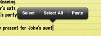
You can adjust some of the behaviors of the menu to give users more control over the content in your app. For example, you can:
Specify which of the standard menu commands are appropriate for the current context
Determine the position of the menu before it appears so that you can prevent important parts of your app’s UI from being obscured
Define the object that is selected by default when users double-tap to reveal the menu
You can't change the color or shape of the menu itself.
For information on how to implement these behaviors in code, see “Copy and Paste Operations” in iOS App Programming Guide.
To ensure that the edit menu behaves as users expect in your app, you should:
Display commands that make sense in the current context. For example, if nothing is selected, the menu should not contain Copy or Cut because these commands act on a selection. Similarly, if something is selected, the menu should not contain Select. If you support an edit menu in a custom view, you’re responsible for making sure that the commands the menu displays are appropriate for the current context.
Accommodate the menu display in your layout. iOS displays the edit menu above or below the insertion point or selection, depending on available space, and places the menu pointer so that users can see how the menu commands relate to the content. You can programmatically determine the position of the menu before it appears so that you can prevent important parts of your UI from being obscured, if necessary.
Support both gestures that people can use to invoke the menu. Although the touch and hold gesture is the primary way users reveal the edit menu, they can also double-tap a word in a text view to select the word and reveal the menu at the same time. If you support the menu in a custom view, be sure to respond to both gestures. In addition, you can define the object that is selected by default when the user double taps.
Avoid creating a button in your UI that performs a command that’s available in the edit menu. For example, it’s better to allow users to perform a copy operation using the edit menu than to provide a Copy button, because users will wonder why there are two ways to do the same thing in your app.
Consider enabling the selection of static text if it’s useful to the user. For example, a user might want to copy the caption of an image, but they’re not likely to want to copy the label of a tab item or a screen title, such as Accounts. In a text view, selection by word should be the default.
Don’t make button titles selectable. A selectable button title makes it difficult for users to reveal the edit menu without activating the button. In general, elements that behave as buttons don’t need to be selectable.
Combine support for undo and redo with your support of copy and paste. People often expect to be able to undo recent operations if they change their minds. Because the edit menu doesn’t require confirmation before its actions are performed, you should give users the opportunity to undo or redo these actions (to learn how to do this, see “Undo and Redo”).
In iOS 4 and later, you can provide custom, app-specific commands to display in the edit menu. The following example shows a menu that allows users to copy a style rather simply copy text.
Follow these guidelines if you need to create custom edit menu items.
Create edit menu items that edit, alter, or otherwise act directly upon the user’s selection. People expect the standard edit menu items to act upon text or objects within the current context, and it’s best when your custom menu items behave similarly.
List custom items together after all system-provided items. Don’t intersperse your custom items with the system-provided ones.
Keep the number of custom menu items reasonable. You don’t want to overwhelm your users with too many choices.
Use succinct names for your custom menu items and make sure the names precisely describe what the commands do. In general, item names should be verbs that describe the action to be performed. Although you should generally use a single capitalized word for an item name, use title-style capitalization if you must use a short phrase. (Briefly, title-style capitalization means to capitalize every word except articles, coordinating conjunctions, and prepositions of four or fewer letters.)
Undo and Redo
Users initiate an Undo operation by shaking the device, which displays an alert that allows them to:
Undo what they just typed
Redo previously undone typing
Cancel the undo operation
You can support the Undo operation in a more general way in your app by specifying:
The actions users can undo or redo
The circumstances under which your app should interpret a shake event as the shake-to-undo gesture
How many levels of undo to support
To learn how to implement this behavior in code, see Undo Architecture. If you support undo and redo in your app, follow these guidelines to provide a good user experience.
Supply brief descriptive phrases that tell users precisely what they’re undoing or redoing. iOS automatically supplies the strings “Undo “ and “Redo “ (including a space after the word) for the undo alert button titles, but you need to provide a word or two that describes the action users can undo or redo. For example, you might supply the text Delete Name or Address Change, to create button titles such as “Undo Delete Name” or “Redo Address Change.” (Note that the Cancel button in the alert cannot be changed or removed.)
Avoid supplying text that is too long. A button title that is too long is truncated and is difficult for users to decipher. And because this text is in a button title, use title-style capitalization and do not add punctuation.
Avoid overloading the shake gesture. Even though you can programmatically set when your app interprets a shake event as shake to undo, you run the risk of confusing users if they also use shake to perform a different action. Analyze user interaction in your app and avoid creating situations in which users can’t reliably predict the result of the shake gesture.
Use the system-provided Undo and Redo buttons only if undo and redo are fundamental tasks in your app. Remember that the shake gesture is the primary way users initiate undo and redo, and that it can be confusing to offer two different ways to perform the same task. If you decide it’s important to provide explicit, dedicated controls for undo and redo, you can place the system-provided buttons in the navigation bar. (To learn more about these buttons, see “Standard Buttons for Use in Toolbars and Navigation Bars.”)
Clearly relate undo and redo capability to the user’s immediate context, and not to an earlier context. Consider the context of the actions you allow to be undone or redone. In general, users expect their changes and actions to take effect immediately.
Keyboards and Input Views
If appropriate, you can design a custom input view to replace the system-provided onscreen keyboard. For example, Numbers on iPad provides an input view that’s designed to make entering dates and times easy and efficient.
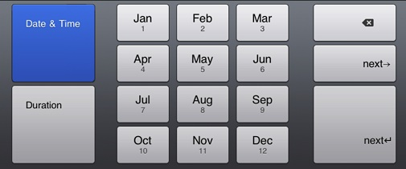
If you provide a custom input view, be sure its function is obvious to people. Also, be sure to make the controls in your input view look tappable.
You can also provide a custom input accessory view, which is a separate view that appears above the keyboard (or your custom input view). For example, in some contexts, Numbers displays an input accessory view that allows users to perform standard or custom calculations on spreadsheet values.
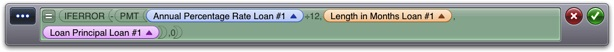
In iOS 4.2 and later, you can use the standard keyboard click sound to provide audible feedback when people tap the custom controls in your input view. To learn how to enable this sound in your code, see the documentation for playInputClick in UIDevice Class Reference.
Copyright © 2013 Apple Inc. All Rights Reserved. Terms of Use | Privacy Policy | Updated: 2013-05-01